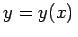
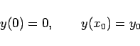

Das Brachistochronenproblem wurde 1696 von J. BERNOULLI formuliert und beinhaltet die folgende Aufgabe: Der in einer vertikalen x,y-Ebene liegende Punkt P0(x0,y0) soll mit dem Koordinatenursprung durch eine Kurve y=y(x) so verbunden werden, daß ein längs dieser Kurve sich bewegender Massepunkt allein unter dem Einfluß der Schwerkraft in der kürzesten Zeit von P0 zum Ursprung gelangt (s. Abbildung).
Mit der Formel für die Fallzeit T ergibt sich die folgende mathematische Formulierung: Man bestimme eine einmal stetig differenzierbare Kurve , für die
gilt (g Fallbeschleunigung) und die die Randbedingungen
|  | (10.10) |
erfüllt. Man beachte, daß in (10.9) für x=x0 eine Singularität auftritt.